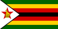
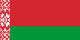

ALBANIË Skënderbeu Korçë
ALBANIË Skënderbeu Korçë OGUNJIMI, Marvin
OGUNJIMI, Marvin| ALBANIË |
|||||
|---|---|---|---|---|---|
| Club | Speler | Periode | Niveau | Periode OHL | Niveau OHL |
| Skënderbeu Korçë |
OGUNJIMI, Marvin |
2017 | Kategoria Superiore (1) | 2013–2014 (geleend) | Eerste Klasse (1) |
| BELGIË |
|||||
|---|---|---|---|---|---|
| Club | Speler | Periode | Niveau | Periode OHL | Niveau OHL |
| Anderlecht |
ODOI, Denis |
2011–2013 | Eerste Klasse (1) | 2006–2009 | Tweede Klasse (2) |
| Antwerp |
 BOSTOCK, John BOSTOCK, John |
2013–2014 | Tweede Klasse (2) | 2014–2015 2015–2016 |
Tweede Klasse (2) Eerste Klasse (1) |
| DAESELEIRE, Dimitri |
2013 (geleend) 2015–2017 |
Tweede Klasse (2) Tweede Klasse (2)/Eerste Klasse B (2) |
2017–2019 | Eerste Klasse B (2) | |
| DE ROECK, Jonas |
1997–1998 1998–2000 2000–2001 2013–2015 |
Eerste Klasse (1) Tweede Klasse (2) Eerste Klasse (1) Tweede Klasse (2) |
2012–2013 | Eerste Klasse (1) | |
| HAYEN, Nicky |
2012–2013 | Tweede Klasse (2) | 2010–2011 2011–2012 |
Tweede Klasse (2) Eerste Klasse (1) |
|
| REMACLE, Jordan |
2016 | Eerste Klasse B (2) | 2010–2011 2011–2012 2015–2016 |
Tweede Klasse (2) Eerste Klasse (1) Eerste Klasse (1) |
|
| ASV Geel (2013– ) Geel-Meerhout (2008–2013) |
JANSSENS, Kevin |
2010–2011 | Derde Klasse A (3) | 2005–2009 (uitgeleend 2008–2009) | Tweede Klasse (2) |
| Beerschot AC (2011–2013) Germinal Beerschot (1999–2011) Germinal Ekeren (1920–1999) |
DE ROECK, Jonas |
2005–2007 | Eerste Klasse (1) | 2012–2013 | Eerste Klasse (1) |
| OGUNJIMI, Marvin |
2013 (geleend) | Eerste Klasse (1) | 2013–2014 (geleend) | Eerste Klasse (1) | |
| Betekom |
JANSSENS, Kevin |
2018– | Derde Klasse Amateur VFV B (5)/Derde Afdeling VFV B (5) | 2005–2009 (uitgeleend 2008–2009) | Tweede Klasse (2) |
| Bornem |
JANSSENS, Kevin |
2011–2012 | Derde Klasse B (3) | 2005–2009 (uitgeleend 2008–2009) | Tweede Klasse (2) |
| Cappellen |
NJENGO, Leo |
2020 | Tweede Afdeling VFV B (4) | 2017–2019 (uitgeleend 2017–2018 & 2019) | Eerste Klasse B (2) |
| Cercle Brugge |
VAN EENOO, Lukas |
2008–2014 (uitgeleend 2014) | Eerste Klasse (1) | 2014 | Eerste Klasse (1) |
| Charleroi |
GERAERTS, Karel |
2014–2016 | Eerste Klasse (1) | 2011–2014 | Eerste Klasse (1) |
| REMACLE, Jordan |
2017–2018 | Eerste Klasse A (1) | 2010–2011 2011–2012 2015–2016 |
Tweede Klasse (2) Eerste Klasse (1) Eerste Klasse (1) |
|
| Club Brugge |
COOLS, Dion | 2015–2020 | Eerste Klasse (1)/Eerste Klasse A (1) | 2013–2014 2014–2015 |
Eerste Klasse (1) Tweede Klasse (2) |
| GERAERTS, Karel |
2000–2004 (uitgeleend 2004) 2007–2011 |
Eerste Klasse (1) Eerste Klasse (1) |
2011–2014 | Eerste Klasse (1) | |
| ODOI, Denis |
2022– | Eerste Klasse A (1) | 2006–2009 | Tweede Klasse (2) | |
 SOWAH, Kamal SOWAH, Kamal |
2021– (uitgeleend 2022– ) | Eerste Klasse A (1) | 2018–2020 2020–2021 |
Eerste Klasse B (2) Eerste Klasse A (1) |
|
 TOUBA, Ahmed TOUBA, Ahmed |
2016–2020 (uitgeleend 2018–2020) | Eerste Klasse A (1) | 2018–2019 (geleend) | Eerste Klasse B (2) | |
| Coxyde |
JANSSENS, Kevin |
2009–2010 | Derde Klasse A (3) | 2005–2009 (uitgeleend 2008–2009) | Tweede Klasse (2) |
| Dender EH |
HAYEN, Nicky |
2013–2014 | Derde Klasse A (3) | 2010–2011 2011–2012 |
Tweede Klasse (2) Eerste Klasse (1) |
| Dessel Sport |
 TAPOKO, Kevin TAPOKO, Kevin |
2013–2014 | Tweede Klasse (2) | 2015 2015–2016 |
Tweede Klasse (2) Eerste Klasse (1) |
| Eendracht Aalst |
GILIS, Jo |
2019 | Eerste Klasse Amateur (3) | 2018–2020 (uitgeleend 2019) 2020– (uitgeleend 2020–2021) |
Eerste Klasse B (2) Eerste Klasse A (1) |
| Excel Mouscron (2016– ) Mouscron-Péruwelz (2010–2016) |
TAPOKO, Kevin |
2016 | Eerste Klasse (1) | 2015 2015–2016 |
Tweede Klasse (2) Eerste Klasse (1) |
| Genk |
DAESELEIRE, Dimitri |
2008–2011 | Eerste Klasse (1) | 2017–2019 | Eerste Klasse B (2) |
| OGUNJIMI, Marvin |
2004–2011 (uitgeleend 2007–2008) | Eerste Klasse (1) | 2013–2014 (geleend) | Eerste Klasse (1) | |
| REMACLE, Jordan |
2004–2006 | Eerste Klasse (1) | 2010–2011 2011–2012 2015–2016 |
Tweede Klasse (2) Eerste Klasse (1) Eerste Klasse (1) |
|
| Gent |
DE ROECK, Jonas |
2007–2009 | Eerste Klasse (1) | 2012–2013 | Eerste Klasse (1) |
| REMACLE, Jordan |
2012–2013 (uitgeleend 2013) | Eerste Klasse (1) | 2010–2011 2011–2012 2015–2016 |
Tweede Klasse (2) Eerste Klasse (1) Eerste Klasse (1) |
|
| Dessel Sport |
NJENGO, Leo |
2016 2017–2018 (geleend) |
Eerste Klasse Amateur (3) | 2017–2019 (uitgeleend 2017–2018 & 2019) | Eerste Klasse B (2) |
| Diest |
JANSSENS, Kevin |
2017–2018 | Derde Klasse Amateur VFV B (5) | 2005–2009 (uitgeleend 2008–2009) | Tweede Klasse (2) |
| Heist |
GILIS, Jo |
2021 | Eerste Nationale (3) | 2018–2020 (uitgeleend 2019) 2020– (uitgeleend 2020–2021) |
Eerste Klasse B (2) Eerste Klasse A (1) |
| NJENGO, Leo |
2019 (geleend) | Eerste Klasse Amateur (3) | 2017–2019 (uitgeleend 2017–2018 & 2019) | Eerste Klasse B (2) | |
| Herstal |
REMACLE, Jordan |
2019–2021 | Division 3 Amateur ACFF B (5)/Division 3 ACFF B (5) | 2010–2011 2011–2012 2015–2016 |
Tweede Klasse (2) Eerste Klasse (1) Eerste Klasse (1) |
| Kortrijk |
 KEET, Darren KEET, Darren |
2011–2016 | Eerste Klasse (1) | 2019–2020 2020 |
Eerste Klasse B (2) Eerste Klasse A (1) |
| VAN EENOO, Lukas |
2014–2018 (uitgeleend 2016–2017 & 2018) | Eerste Klasse (1)/Eerste Klasse A (1) | 2014 | Eerste Klasse (1) | |
| La Calamine |
REMACLE, Jordan |
2021– | Provinciale 1 Liège (6) | 2010–2011 2011–2012 2015–2016 |
Tweede Klasse (2) Eerste Klasse (1) Eerste Klasse (1) |
| Lierse |
DE ROECK, Jonas |
2001–2005 | Eerste Klasse (1) | 2012–2013 | Eerste Klasse (1) |
| NGAWA, Pierre-Yves |
2014–2015 | Eerste Klasse (1) | 2015–2016 2016–2017 2019–2020 2020– |
Eerste Klasse (1) Eerste Klasse B (2) Eerste Klasse B (2) Eerste Klasse A (1) |
|
| WATT, Tony | 2013–2014 (geleend) | Eerste Klasse (1) | 2017–2018 | Eerste Klasse B (2) | |
| WEUTS, Koen |
2007–2009 2015–2018 |
Tweede Klasse (2) Tweede Klasse/Eerste Klasse B (2) |
2009–2011 2011–2013 |
Tweede Klasse (2) Eerste Klasse (1) |
|
| Lierse Kempenzonen |
GILIS, Jo |
2020–2021 | Eerste Klasse B (2) | 2018–2020 (uitgeleend 2019) 2020– (uitgeleend 2020–2021) |
Eerste Klasse B (2) Eerste Klasse A (1) |
| OGUNJIMI, Marvin |
2019 | Eerste Klasse Amateur (3) | 2013–2014 (geleend) | Eerste Klasse (1) | |
| Lyra-Lierse Berlaar |
WEUTS, Koen |
2019–2020 2020– |
Derde Klasse Amateur VFV B (5) Tweede Afdeling VFV B (4) |
2009–2011 2011–2013 |
Tweede Klasse (2) Eerste Klasse (1) |
| Lokeren |
GERAERTS, Karel |
2004 (geleend) | Eerste Klasse (1) | 2011–2014 | Eerste Klasse (1) |
| ODOI, Denis |
2013–2016 | Eerste Klasse (1) | 2006–2009 | Tweede Klasse (2) | |
| REMACLE, Jordan |
2013–2015 | Eerste Klasse (1) | 2010–2011 2011–2012 2015–2016 |
Tweede Klasse (2) Eerste Klasse (1) Eerste Klasse (1) |
|
| Lokeren-Temse |
NJENGO, Leo |
2022– | Tweede Afdeling VFV A (4) | 2017–2019 (uitgeleend 2017–2018 & 2019) | Eerste Klasse B (2) |
| Lommel |
SULA, Din |
2017–2018 (geleend) | Eerste Klasse Amateur (3) | 2015 2015–2016 2016–2018 (uitgeleend 2017–2018) |
Tweede Klasse (2) Eerste Klasse (1) Eerste Klasse B (2) |
| Londerzeel |
DAESELEIRE, Dimitri |
2021– | Tweede Afdeling VFV B (4) | 2017–2019 | Eerste Klasse B (2) |
| Mechelen |
RAEMAEKERS, Toon |
2022– | Eerste Klasse A (1) | 2020 2020–2022 |
Eerste Klasse B (2) Eerste Klasse A (1) |
| Patro Eisden Maasmechelen |
SULA, Din |
2022– (geleend) | Eerste Klasse Amateur (3) | 2015 2015–2016 2016–2018 (uitgeleend 2017–2018) |
Tweede Klasse (2) Eerste Klasse (1) Eerste Klasse B (2) |
| OGUNJIMI, Marvin |
2019–2020 | Eerste Klasse Amateur (3) | 2013–2014 (geleend) | Eerste Klasse (1) | |
| RAEC Mons |
OGUNJIMI, Marvin |
2021– | Division 3 ACFF A (5) | 2013–2014 (geleend) | Eerste Klasse (1) |
| Roeselare |
DAESELEIRE, Dimitri |
2020 | Eerste Klasse Amateur (3) | 2017–2019 | Eerste Klasse B (2) |
| VAN EENOO, Lukas |
2016–2017 (geleend) | Eerste Klasse B (2) | 2014 | Eerste Klasse (1) | |
| Rupel Boom |
DAESELEIRE, Dimitri |
2019–2020 | Eerste Klasse Amateur (3) | 2017–2019 | Eerste Klasse B (2) |
| RWDM |
WEUTS, Koen |
2019 | Eerste Klasse Amateur (3) | 2009–2011 2011–2013 |
Tweede Klasse (2) Eerste Klasse (1) |
| Sint-Truiden |
DAESELEIRE, Dimitri |
2011–2012 2012–2015 (uitgeleend 2013) |
Eerste Klasse (1) Tweede Klasse (2) |
2017–2019 | Eerste Klasse B (2) |
| HAYEN, Nicky |
1999–2008 | Eerste Klasse (1) | 2010–2011 2011–2012 |
Tweede Klasse (2) Eerste Klasse (1) |
|
| NGAWA, Pierre-Yves |
2011–2012 (geleend) 2012–2013 (geleend) |
Eerste Klasse (1) Tweede Klasse (2) |
2015–2016 2016–2017 2019–2020 2020– |
Eerste Klasse (1) Eerste Klasse B (2) Eerste Klasse B (2) Eerste Klasse A (1) |
|
| ODOI, Denis |
2009–2011 | Eerste Klasse (1) | 2006–2009 | Tweede Klasse (2) | |
| Solières Sport |
REMACLE, Jordan |
2018–2019 | Division 2 Amateur ACFF (4) | 2010–2011 2011–2012 2015–2016 |
Tweede Klasse (2) Eerste Klasse (1) Eerste Klasse (1) |
| Standard Liège |
GERAERTS, Karel |
2004–2007 | Eerste Klasse (1) | 2011–2014 | Eerste Klasse (1) |
| NGAWA, Pierre-Yves |
2011–2014 (uitgeleend 2011–2014) | Eerste Klasse (1) | 2015–2016 2016–2017 2019–2020 2020– |
Eerste Klasse (1) Eerste Klasse B (2) Eerste Klasse B (2) Eerste Klasse A (1) |
|
| OGUNJIMI, Marvin |
2012 (geleend) | Eerste Klasse (1) | 2013–2014 (geleend) | Eerste Klasse (1) | |
| WATT, Tony | 2014 | Eerste Klasse (1) | 2017–2018 | Eerste Klasse B (2) | |
| Tempo Overijse |
JANSSENS, Kevin |
2013–2015 2015–2016 2016–2017 |
Vierde Klasse B (4) Derde Klasse B (3) Tweede Klasse Amateur VFV B (4) |
2005–2009 (uitgeleend 2008–2009) | Tweede Klasse (2) |
| URSL Visé |
NJENGO, Leo |
2019–2020 | Eerste Klasse Amateur (3) | 2017–2019 (uitgeleend 2017–2018 & 2019) | Eerste Klasse B (2) |
| Virton |
SULA, Din |
2021– (uitgeleend 2022– ) | Eerste Klasse B (2) | 2015 2015–2016 2016–2018 (uitgeleend 2017–2018) |
Tweede Klasse (2) Eerste Klasse (1) Eerste Klasse B (2) |
| Waasland-Beveren |
REMACLE, Jordan |
2013 (geleend) | Eerste Klasse (1) | 2010–2011 2011–2012 2015–2016 |
Tweede Klasse (2) Eerste Klasse (1) Eerste Klasse (1) |
| SULA, Din |
2018–2021 | Eerste Klasse A (1) | 2015 2015–2016 2016–2018 (uitgeleend 2017–2018) |
Tweede Klasse (2) Eerste Klasse (1) Eerste Klasse B (2) |
|
| Westerlo |
NJENGO, Leo |
2015–2016 | Eerste Klasse (1) | 2017–2019 (uitgeleend 2017–2018 & 2019) | Eerste Klasse B (2) |
| VAN EENOO, Lukas |
2018 (geleend) 2018– |
Eerste Klasse B (2) Eerste Klasse B (2) |
2014 | Eerste Klasse (1) | |
| White Star Bruxelles |
TAPOKO, Kevin |
2016–2017 | Eerste Klasse Amateur (3) | 2015 2015–2016 |
Tweede Klasse (2) Eerste Klasse (1) |
| Wijgmaal |
JANSSENS, Kevin |
2012–2013 | Vierde Klasse B (4) | 2005–2009 (uitgeleend 2008–2009) | Tweede Klasse (2) |
| Woluwe-Zaventem |
JANSSENS, Kevin |
2008–2009 (geleend) | Derde Klasse A (3) | 2005–2009 (uitgeleend 2008–2009) | Tweede Klasse (2) |
| Zulte Waregem |
COOLS, Dion | 2022– (geleend) | Eerste Klasse A (1) | 2013–2014 2014–2015 |
Eerste Klasse (1) Tweede Klasse (2) |
 BULGARIJE BULGARIJE |
|||||
|---|---|---|---|---|---|
| Club | Speler | Periode | Niveau | Periode OHL | Niveau OHL |
| Beroe Stara Zagora |
BANDALOVSKI, Ivan |
2018–2019 | Parva Liga (1) | 2013–2014 | Eerste Klasse (1) |
| TAPOKO, Kevin |
2022– (geleend) | Parva Liga (1) | 2015 2015–2016 |
Tweede Klasse (2) Eerste Klasse (1) |
|
| TOUBA, Ahmed |
2019–2020 (geleend) | Parva Liga (1) | 2018–2019 (geleend) | Eerste Klasse B (2) | |
| Botev Plovdiv |
BANDALOVSKI, Ivan |
2020 | Parva Liga (1) | 2013–2014 | Eerste Klasse (1) |
| CSKA Sofia |
BANDALOVSKI, Ivan |
2010–2013 | A Football Group (1) | 2013–2014 | Eerste Klasse (1) |
| WATT, Tony | 2019 | Parva Liga (1) | 2017–2018 | Eerste Klasse B (2) | |
| Litex Lovech |
BANDALOVSKI, Ivan |
2004–2007 (uitgeleend 2005–2006) | A Football Group (1) | 2013–2014 | Eerste Klasse (1) |
| Lokomotiv Sofia |
BANDALOVSKI, Ivan |
2008–2010 | A Football Group (1) | 2013–2014 | Eerste Klasse (1) |
| Tsarsko Selo Sofia |
BANDALOVSKI, Ivan |
2020–2021 | Parva Liga (1) | 2013–2014 | Eerste Klasse (1) |
| Vereya Stara Zagora |
BANDALOVSKI, Ivan |
2017 | Parva Liga (1) | 2013–2014 | Eerste Klasse (1) |
| CYPRUS | |||||
|---|---|---|---|---|---|
| Club | Speler | Periode | Niveau | Periode OHL | Niveau OHL |
| Anorthosis Famagusta | BANDALOVSKI, Ivan |
2017 | Eerste Divisie (1) | 2013–2014 | Eerste Klasse (1) |
| Aris Limassol | TAPOKO, Kevin |
2018 | Eerste Divisie (1) | 2015 2015–2016 |
Tweede Klasse (2) Eerste Klasse (1) |
 DENEMARKEN DENEMARKEN |
|||||
|---|---|---|---|---|---|
| Club | Speler | Periode | Niveau | Periode OHL | Niveau OHL |
| Midtjylland |
COOLS, Dion | 2020– (uitgeleend 2022– ) | Superligaen (1) | 2013–2014 2014–2015 |
Eerste Klasse (1) Tweede Klasse (2) |
 DUITSLAND DUITSLAND |
|||||
|---|---|---|---|---|---|
| Club | Speler | Periode | Niveau | Periode OHL | Niveau OHL |
| Augsburg |
DE ROECK, Jonas |
2009–2011 2011–2012 |
2. Bundesliga (2) Bundesliga (1) |
2012–2013 | Eerste Klasse (1) |
| Freiburg |
 KAPUSTKA, Bartosz KAPUSTKA, Bartosz |
2017–2018 (geleend & gedeeld Freiburg II) | Bundesliga (1) | 2018–2019 (geleend) | Eerste Klasse B (2) |
| Freiburg II |
KAPUSTKA, Bartosz |
2017–2018 (geleend & gedeeld Freiburg) | Regionalliga Südwest (4) | 2018–2019 (geleend) | Eerste Klasse B (2) |
 ENGELAND ENGELAND |
|||||
|---|---|---|---|---|---|
| Club | Speler | Periode | Niveau | Periode OHL | Niveau OHL |
| Blackburn Rovers |
WATT, Tony | 2016 (geleend) | Football League Championship (2) | 2017–2018 | Eerste Klasse B (2) |
| Brentford |
BOSTOCK, John |
2009–2010 (geleend) | Football League One (3) | 2014–2015 2015–2016 |
Tweede Klasse (2) Eerste Klasse (1) |
 Cardiff City Cardiff City |
WATT, Tony | 2015–2016 (geleend) | Football League Championship (2) | 2017–2018 | Eerste Klasse B (2) |
| Charlton Athletic |
WATT, Tony | 2015–2016 (uitgeleend 2015–2016) 2016–2017 (uitgeleend 2016) |
Football League Championship (2) EFL League One (3) |
2017–2018 | Eerste Klasse B (2) |
| Crystal Palace |
BOSTOCK, John |
2007–2008 | EFL Championship (2) | 2014–2015 2015–2016 |
Tweede Klasse (2) Eerste Klasse (1) |
| Doncaster Rovers |
BOSTOCK, John |
2021– | EFL League One (3) | 2014–2015 2015–2016 |
Tweede Klasse (2) Eerste Klasse (1) |
| Fulham |
ODOI, Denis |
2016–2018 2018–2019 2019–2020 2020–2021 2021–2022 |
EFL Championship (2) Premier League (1) EFL Championship (2) Premier League (1) EFL Championship (2) |
2006–2009 | Tweede Klasse (2) |
| Hull City |
BOSTOCK, John |
2010 (geleend) | EFL Championship (2) | 2014–2015 2015–2016 |
Tweede Klasse (2) Eerste Klasse (1) |
| Leicester City |
EPPIAH, Josh |
2020– (uitgeleend 2020–2021 & 2022–) | Premier League (1) | 2020–2021 | Eerste Klasse A (1) |
| KAPUSTKA, Bartosz |
2016–2020 (uitgeleend 2017–2019) | Premier League (1) | 2018–2019 (geleend) | Eerste Klasse B (2) | |
| SOWAH, Kamal |
2018–2021 (uitgeleend 2018–2021) | Premier League (1) | 2018–2020 2020–2021 |
Eerste Klasse B (2) Eerste Klasse A (1) |
|
| Northampton Town |
EPPIAH, Josh |
2022– (geleend) | EFL League Two (4) | 2020–2021 | Eerste Klasse A (1) |
| Nottingham Forest |
BOSTOCK, John |
2019–2020 (geleend) | EFL Championship (2) | 2014–2015 2015–2016 |
Tweede Klasse (2) Eerste Klasse (1) |
| Sheffield Wednesday |
BOSTOCK, John |
2012 (geleend) | Football League One (3) | 2014–2015 2015–2016 |
Tweede Klasse (2) Eerste Klasse (1) |
| Swindon Town |
BOSTOCK, John |
2012–2013 (geleend) | Football League One (3) | 2014–2015 2015–2016 |
Tweede Klasse (2) Eerste Klasse (1) |
| Tottenham |
BOSTOCK, John |
2008–2013 (uitgeleend 2009–2010 & 2012–2013) | Premier League (1) | 2014–2015 2015–2016 |
Tweede Klasse (2) Eerste Klasse (1) |
| FRANKRIJK |
|||||
|---|---|---|---|---|---|
| Club | Speler | Periode | Niveau | Periode OHL | Niveau OHL |
| Boulogne |
 KARURU, Ovidy | 2009–2010 2010–2012 2012 |
Ligue 1 (1) Ligue 2 (2) Championnat National (3) |
2012–2014 | Eerste Klasse (1) |
| Grenoble |
TAPOKO, Kevin |
2020–2021 (geleend) | Ligue 2 (2) | 2015 2015–2016 |
Tweede Klasse (2) Eerste Klasse (1) |
| Lens |
BOSTOCK, John |
2016–2018 | Ligue 2 (2) | 2014–2015 2015–2016 |
Tweede Klasse (2) Eerste Klasse (1) |
| Toulouse |
BOSTOCK, John |
2018–2020 (uitgeleend 2019–2020) | Ligue 1 (1) | 2014–2015 2015–2016 |
Tweede Klasse (2) Eerste Klasse (1) |
 GRIEKENLAND GRIEKENLAND |
|||||
|---|---|---|---|---|---|
| Club | Speler | Periode | Niveau | Periode OHL | Niveau OHL |
| Panionios |
TAPOKO, Kevin |
2017 | Super League Greece (1) | 2015 2015–2016 |
Tweede Klasse (2) Eerste Klasse (1) |
 HONGARIJE HONGARIJE |
|||||
|---|---|---|---|---|---|
| Club | Speler | Periode | Niveau | Periode OHL | Niveau OHL |
| Balmazújváros |
KOVÁCS, Ádám |
2016–2017 2017–2018 |
Nemzeti Bajnokság II (2) Nemzeti Bajnokság I (1) |
2010 | Tweede Klasse (2) |
| Békéscsaba |
KOVÁCS, Ádám |
2019–2021 | Nemzeti Bajnokság II (2) | 2010 | Tweede Klasse (2) |
| Budapest Honvéd II |
KOVÁCS, Ádám |
2011 | Nemzeti Bajnokság II Nyugati (2) | 2010 | Tweede Klasse (2) |
| Debrecen |
KOVÁCS, Ádám |
2014–2015 (uitgeleend 2014–2015) | Nemzeti Bajnokság I (1) | 2010 | Tweede Klasse (2) |
| Győri ETO |
KOVÁCS, Ádám |
2015–2016 | Nemzeti Bajnokság III (3) | 2010 | Tweede Klasse (2) |
| Kecskemét |
KOVÁCS, Ádám |
2013 (geleend, gedeeld met Kecskemét II) | Nemzeti Bajnokság I (1) | 2010 | Tweede Klasse (2) |
| Kecskemét II |
KOVÁCS, Ádám |
2013 (geleend, gedeeld met Kecskemét) | Nemzeti Bajnokság III Alföld (3) | 2010 | Tweede Klasse (2) |
| Mosonmagyaróvár |
KOVÁCS, Ádám |
2018–2019 | Nemzeti Bajnokság II (2) | 2010 | Tweede Klasse (2) |
| Nyírbátor |
KOVÁCS, Ádám |
2013 (geleend) | Nemzeti Bajnokság III Keleti (3) | 2010 | Tweede Klasse (2) |
| Nyíregyháza Spartacus |
KOVÁCS, Ádám |
2011–2012 2012–2013 (uitgeleend 2013) 2013–2014 (uitgeleend 2013) 2022– |
Nemzeti Bajnokság II Keleti (2) Nemzeti Bajnokság II Keleti (2) Nemzeti Bajnokság II (2) Nemzeti Bajnokság II (2) |
2010 | Tweede Klasse (2) |
| Sopron |
KOVÁCS, Ádám |
2014–2015 (geleend) | Nemzeti Bajnokság II (2) | 2010 | Tweede Klasse (2) |
| Újpest |
NGAWA, Pierre-Yves |
2013–2014 (geleend) | Nemzeti Bajnokság I (1) | 2015–2016 2016–2017 2019–2020 2020– |
Eerste Klasse (1) Eerste Klasse B (2) Eerste Klasse B (2) Eerste Klasse A (1) |
| Vasas |
KOVÁCS, Ádám |
2012 | Nemzeti Bajnokság I (1) | 2010 | Tweede Klasse (2) |
| Zalaegerszeg |
KOVÁCS, Ádám |
2018 | Nemzeti Bajnokság II (2) | 2010 | Tweede Klasse (2) |
 ISRAËL ISRAËL |
|||||
|---|---|---|---|---|---|
| Club | Speler | Periode | Niveau | Periode OHL | Niveau OHL |
| Hapoel Beër Sjeva |
TAPOKO, Kevin |
2019–2021 (uitgeleend 2019–2021) | Ligat Ha`Al (1) | 2015 2015–2016 |
Tweede Klasse (2) Eerste Klasse (1) |
| Hapoel Hadera |
TAPOKO, Kevin |
2018 | Ligat Ha`Al (1) | 2015 2015–2016 |
Tweede Klasse (2) Eerste Klasse (1) |
| Hapoel Haifa |
TAPOKO, Kevin |
2019–2020 (geleend) 2021– (uitgeleend 2022– ) |
Ligat Ha`Al (1) Ligat Ha`Al (1) |
2015 2015–2016 |
Tweede Klasse (2) Eerste Klasse (1) |
 ITALIË ITALIË |
|||||
|---|---|---|---|---|---|
| Club | Speler | Periode | Niveau | Periode OHL | Niveau OHL |
| AVELLINO |
NGAWA, Pierre-Yves |
2017–2018 | Serie B (2) | 2015–2016 2016–2017 2019–2020 2020– |
Eerste Klasse (1) Eerste Klasse B (2) Eerste Klasse B (2) Eerste Klasse A (1) |
| FOGGIA |
NGAWA, Pierre-Yves |
2019 (geleend) | Serie B (2) | 2015–2016 2016–2017 2019–2020 2020– |
Eerste Klasse (1) Eerste Klasse B (2) Eerste Klasse B (2) Eerste Klasse A (1) |
| PERUGIA |
NGAWA, Pierre-Yves |
2018–2019 (uitgeleend 2019) | Serie B (2) | 2015–2016 2016–2017 2019–2020 2020– |
Eerste Klasse (1) Eerste Klasse B (2) Eerste Klasse B (2) Eerste Klasse A (1) |
 JAPAN JAPAN |
|||||
|---|---|---|---|---|---|
| Club | Speler | Periode | Niveau | Periode OHL | Niveau OHL |
| Hokkaido Consadole Sapporo |
 THAMSATCHANAN, Kawin THAMSATCHANAN, Kawin |
2020 (geleend) | J1 League (1) | 2018–2020 (uitgeleend 2020) 2020– (uitgeleend 2020 & 2022– ) |
Eerste Klasse B (2) Eerste Klasse A (1) |
 KAZACHSTAN KAZACHSTAN |
|||||
|---|---|---|---|---|---|
| Club | Speler | Periode | Niveau | Periode OHL | Niveau OHL |
| Okzhetpes |
OGUNJIMI, Marvin |
2017 | Kazakhstan Premier League (1) | 2013–2014 (geleend) | Eerste Klasse (1) |
 NEDERLAND NEDERLAND |
|||||
|---|---|---|---|---|---|
| Club | Speler | Periode | Niveau | Periode OHL | Niveau OHL |
| Ajax |
HENDRIKS, Sam |
2013–2016 (gedeeld Jong Ajax) | Eredivisie (1) | 2018–2020 (uitgeleend 2019 & 2020) | Eerste Klasse B (2) |
| AZ Alkmaar |
SOWAH, Kamal |
2022– (geleend) | Eredivisie (1) | 2018–2020 2020–2021 |
Eerste Klasse B (2) Eerste Klasse A (1) |
| Cambuur |
HENDRIKS, Sam |
2019 (geleend) 2020 (geleend) 2021– (uitgeleend 2022– ) |
Eerste Divisie (2) Eerste Divisie (2) Eredivisie (1) |
2018–2020 (uitgeleend 2019 & 2020) | Eerste Klasse B (2) |
| De Graafschap |
HENDRIKS, Sam |
2012–2013 2022– (geleend) |
Eerste Divisie (2) Eerste Divisie (2) |
2018–2020 (uitgeleend 2019 & 2020) | Eerste Klasse B (2) |
| Feyenoord |
BANDALOVSKI, Ivan |
2005–2006 (geleend) | Eredivisie (1) | 2013–2014 | Eerste Klasse (1) |
| Go Ahead Eagles |
HENDRIKS, Sam |
2016–2017 2017–2018 2020–2021 |
Eredivisie (1) Eerste Divisie (2) Eerste Divisie (2) |
2018–2020 (uitgeleend 2019 & 2020) | Eerste Klasse B (2) |
| Helmond Sport |
REMACLE, Jordan |
2007–2008 (geleend) | Eerste Divisie (2) | 2010–2011 2011–2012 2015–2016 |
Tweede Klasse (2) Eerste Klasse (1) Eerste Klasse (1) |
| WEUTS, Koen |
2013–2015 | Eerste Divisie (2) | 2009–2011 2011–2013 |
Tweede Klasse (2) Eerste Klasse (1) |
|
| Jong Ajax |
HENDRIKS, Sam |
2013–2016 (gedeeld Ajax) | Eerste Divisie (2) | 2018–2020 (uitgeleend 2019 & 2020) | Eerste Klasse B (2) |
| MVV Maastricht |
OGUNJIMI, Marvin |
2017–2018 | Eerste Divisie (2) | 2013–2014 (geleend) | Eerste Klasse (1) |
| RBC Roosendaal |
HAYEN, Nicky |
2008–2010 | Eerste Divisie (2) | 2010–2011 2011–2012 |
Tweede Klasse (2) Eerste Klasse (1) |
| REMACLE, Jordan |
2009 (geleend) 2009–2010 |
Eerste Divisie (2) Eerste Divisie (2) |
2010–2011 2011–2012 2015–2016 |
Tweede Klasse (2) Eerste Klasse (1) Eerste Klasse (1) |
|
| RKC Waalwijk |
OGUNJIMI, Marvin |
2007–2008 (geleend) | Eerste Divisie (2) | 2013–2014 (geleend) | Eerste Klasse (1) |
| REMACLE, Jordan |
2006–2007 2007–2009 (uitgeleend 2007–2008 & 2009) |
Eredivisie (1) Eerste Divisie (2) |
2010–2011 2011–2012 2015–2016 |
Tweede Klasse (2) Eerste Klasse (1) Eerste Klasse (1) |
|
| TOUBA, Ahmed |
2020– | Eredivisie (1) | 2018–2019 (geleend) | Eerste Klasse B (2) |
 NOORWEGEN NOORWEGEN |
|||||
|---|---|---|---|---|---|
| Club | Speler | Periode | Niveau | Periode OHL | Niveau OHL |
| Strømsgodset |
OGUNJIMI, Marvin |
2014–2015 | Tippeligaen (1) | 2013–2014 (geleend) | Eerste Klasse (1) |
| POLEN |
|||||
|---|---|---|---|---|---|
| Club | Speler | Periode | Niveau | Periode OHL | Niveau OHL |
| Cracovia |
KAPUSTKA, Bartosz |
2012–2013 2013–2016 |
Liga I (2) Ekstraklasa (1) |
2018–2019 (geleend) | Eerste Klasse B (2) |
| Legia Warshau |
KAPUSTKA, Bartosz |
2020– | Ekstraklasa (1) | 2018–2019 (geleend) | Eerste Klasse B (2) |
 PORTUGAL PORTUGAL |
|||||
|---|---|---|---|---|---|
| Club | Speler | Periode | Niveau | Periode OHL | Niveau OHL |
| Naval 1º de Maio |
NJENGO, Leo |
2014 | Campeonato Nacional de Seniores (3) | 2017–2019 (uitgeleend 2017–2018 & 2019) | Eerste Klasse B (2) |
| Operário |
NJENGO, Leo |
2013–2014 | Campeonato Nacional de Seniores (3) | 2017–2019 (uitgeleend 2017–2018 & 2019) | Eerste Klasse B (2) |
| Trofense |
NJENGO, Leo |
2014–2015 | Segunda Liga (2) | 2017–2019 (uitgeleend 2017–2018 & 2019) | Eerste Klasse B (2) |
 SAOEDI-ARABIË SAOEDI-ARABIË |
|||||
|---|---|---|---|---|---|
| Club | Speler | Periode | Niveau | Periode OHL | Niveau OHL |
| Al-Shoulla |
KARURU, Ovidy | 2022– | Saudi League 1st Division (2) | 2012–2014 | Eerste Klasse (1) |
| SCHOTLAND | |||||
|---|---|---|---|---|---|
| Club | Speler | Periode | Niveau | Periode OHL | Niveau OHL |
| Airdrieonians (2013– ) Airdrie United (2002–2013) |
WATT, Tony | 2009–2010 2010–2011 |
Scottish Football League First Division (2) Scottish Football League Second Division (3) |
2017–2018 | Eerste Klasse B (2) |
| Celtic | WATT, Tony | 2011–2014 (uitgeleend 2013–2014) | Scottish Premier League (1)/Scottish Premiership (1) | 2017–2018 | Eerste Klasse B (2) |
| Dundee United | WATT, Tony | 2022– | Scottish Premiership (1) | 2017–2018 | Eerste Klasse B (2) |
| Heart of Midlothian | WATT, Tony | 2016 (geleend) | Scottish Premiership (1) | 2017–2018 | Eerste Klasse B (2) |
| Motherwell | WATT, Tony | 2020–2021 | Scottish Premiership (1) | 2017–2018 | Eerste Klasse B (2) |
| St Johnstone | WATT, Tony | 2018–2019 | Scottish Premiership (1) | 2017–2018 | Eerste Klasse B (2) |
 SERVIË SERVIË |
|||||
|---|---|---|---|---|---|
| Club | Speler | Periode | Niveau | Periode OHL | Niveau OHL |
| Napredak Kruševac |
 SEKIDIKA, Jesse SEKIDIKA, Jesse |
2016 2016–2018 |
Prva Liga Srbija (2) Superliga Srbije (1) |
2021 (geleend) | Eerste Klasse A (1) |
| Partizan |
BANDALOVSKI, Ivan |
2014–2016 | Superliga Srbije (1) | 2013–2014 | Eerste Klasse (1) |
 SPANJE SPANJE |
|||||
|---|---|---|---|---|---|
| Club | Speler | Periode | Niveau | Periode OHL | Niveau OHL |
| Mallorca |
OGUNJIMI, Marvin |
2011–2013 (uitgeleend 2012 & 2013) 2013–2014 (uitgeleend 2013–2014) |
La Liga (1) Segunda División (2) |
2013–2014 (geleend) | Eerste Klasse (1) |
| THAILAND |
|||||
|---|---|---|---|---|---|
| Club | Speler | Periode | Niveau | Periode OHL | Niveau OHL |
| Muangthong United |
THAMSATCHANAN, Kawin |
2008 2009–2018 |
Thai Division 1 League (2) Thai Premier League (1)/Thai League T1 (1)/Thai League 1 (1) |
2018–2020 (uitgeleend 2020) 2020– (uitgeleend 2020 & 2022– ) |
Eerste Klasse B (2) Eerste Klasse A (1) |
| Port |
THAMSATCHANAN, Kawin |
2022– (geleend) | Thai League T1 (1) | 2018–2020 (uitgeleend 2020) 2020– (uitgeleend 2020 & 2022– ) |
Eerste Klasse B (2) Eerste Klasse A (1) |
| Ratchaburi Mitr Phol |
OGUNJIMI, Marvin |
2016 (geleend) | Thai League T1 (1) | 2013–2014 (geleend) | Eerste Klasse (1) |
| Rajpracha |
THAMSATCHANAN, Kawin |
2007 | Thai Royal Cup Khǒr (4) | 2018–2020 (uitgeleend 2020) 2020– (uitgeleend 2020 & 2022– ) |
Eerste Klasse B (2) Eerste Klasse A (1) |
 TURKIJE TURKIJE |
|||||
|---|---|---|---|---|---|
| Club | Speler | Periode | Niveau | Periode OHL | Niveau OHL |
| Bursaspor |
BOSTOCK, John |
2018 | Süper Lig (1) | 2014–2015 2015–2016 |
Tweede Klasse (2) Eerste Klasse (1) |
| Eskişehirspor |
SEKIDIKA, Jesse |
2018–2019 | TFF 1. Lig (2) | 2021 (geleend) | Eerste Klasse A (1) |
| Eyüpspor |
SEKIDIKA, Jesse |
2022– (geleend) | TFF 1. Lig (2) | 2021 (geleend) | Eerste Klasse A (1) |
| Galatasaray |
SEKIDIKA, Jesse |
2020– (uitgeleend 2021 & 2022) | Süper Lig (1) | 2021 (geleend) | Eerste Klasse A (1) |
| Konyaspor |
SEKIDIKA, Jesse |
2021 (geleend) | Süper Lig (1) | 2021 (geleend) | Eerste Klasse A (1) |
 VERENIGDE STATEN VERENIGDE STATEN |
|||||
|---|---|---|---|---|---|
| Club | Speler | Periode | Niveau | Periode OHL | Niveau OHL |
 Toronto Toronto |
BOSTOCK, John |
2013 (geleend) | Major League Soccer (1) | 2014–2015 2015–2016 |
Tweede Klasse (2) Eerste Klasse (1) |
 VIETNAM VIETNAM |
|||||
|---|---|---|---|---|---|
| Club | Speler | Periode | Niveau | Periode OHL | Niveau OHL |
| Saigon |
OGUNJIMI, Marvin |
2018 | V.League 1 (1) | 2013–2014 (geleend) | Eerste Klasse (1) |
|  WIT-RUSLAND | |||||
|---|---|---|---|---|---|
| Club | Speler | Periode | Niveau | Periode OHL | Niveau OHL |
| Dynamo Brest | OGUNJIMI, Marvin |
2018 | Vyšejšaja Liha (1) | 2013–2014 (geleend) | Eerste Klasse (1) |
| Slavija Mazyr | NJENGO, Leo |
2021 | Vyšejšaja Liha (1) | 2017–2019 (uitgeleend 2017–2018 & 2019) | Eerste Klasse B (2) |
| ZIMBABWE | |||||
|---|---|---|---|---|---|
| Club | Speler | Periode | Niveau | Periode OHL | Niveau OHL |
| Gunners | KARURU, Ovidy | 2009 | Zimbabwe Premier Soccer League (1) | 2012–2014 | Eerste Klasse (1) |
| Masvingo United | KARURU, Ovidy | 2006–2008 | Zimbabwe Premier Soccer League (1) | 2012–2014 | Eerste Klasse (1) |
| ZUID-AFRIKA |
|||||
|---|---|---|---|---|---|
| Club | Speler | Periode | Niveau | Periode OHL | Niveau OHL |
| AmaZulu |
KARURU, Ovidy | 2017–2019 | South African Premier Division (1) | 2012–2014 | Eerste Klasse (1) |
| Bidvest Wits |
KEET, Darren |
2008–2011 2016–2019 |
South African Premier Division (1) South African Premier Division (1) |
2019–2020 2020 |
Eerste Klasse B (2) Eerste Klasse A (1) |
| Black Leopards |
KARURU, Ovidy | 2020–2021 | South African Premier Division (1) | 2012–2014 | Eerste Klasse (1) |
| Cape Town City |
KEET, Darren |
2021– | South African Premier Division (1) | 2019–2020 2020 |
Eerste Klasse B (2) Eerste Klasse A (1) |
| Cape Umoya United |
KEET, Darren |
2021 | South African National First Division (2) | 2019–2020 2020 |
Eerste Klasse B (2) Eerste Klasse A (1) |
| Kaizer Chiefs |
KARURU, Ovidy | 2014–2016 | South African Premier Division (1) | 2012–2014 | Eerste Klasse (1) |
| Stellenbosch |
KARURU, Ovidy | 2020 | South African Premier Division (1) | 2012–2014 | Eerste Klasse (1) |
| Vasco Da Gama |
KEET, Darren |
2007–2008 | SAFA Second Division (3) | 2019–2020 2020 |
Eerste Klasse B (2) Eerste Klasse A (1) |
| ZUID-KOREA | |||||
|---|---|---|---|---|---|
| Club | Speler | Periode | Niveau | Periode OHL | Niveau OHL |
| Suwon | OGUNJIMI, Marvin |
2016 (uitgeleend 2016) | K League Classic (1) | 2013–2014 (geleend) | Eerste Klasse (1) |
 ZWITSERLAND ZWITSERLAND |
|||||
|---|---|---|---|---|---|
| Club | Speler | Periode | Niveau | Periode OHL | Niveau OHL |
| Lausanne-Sport |
TAPOKO, Kevin |
2012–2013 | Swiss Super League (1) | 2015 2015–2016 |
Tweede Klasse (2) Eerste Klasse (1) |